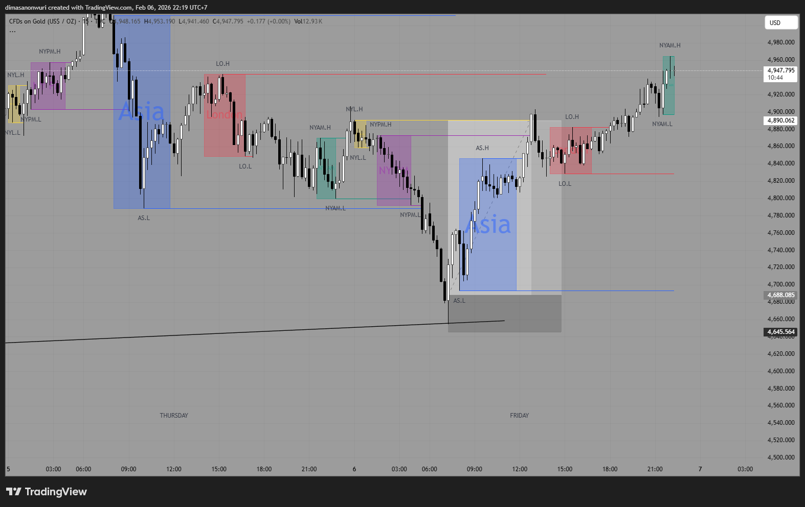
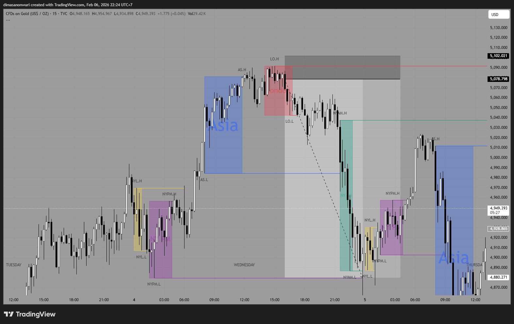

XAUUSD trading dan tutorial
Pengenalan Basic Dari Trading
Pertama kali trading? coba pahami dahulu apa itu AMD killzone
AMD killzone merupakan sebuah teori jam waktu trading,ada sesi asia,sesi london,dan sesi amerika
dijam 06.00-13.00 WIB merupakan sesi asia,dijam 14.00-21.00 WIB merupakan sesi london,dan dijam 21.30-05.00 WIB merupakan sesi amerika/ny
lalu,kenapa ini berpengaruh?
Karena dijam sesi asia biasa terjadi price discoevery dan spot buyer bank central(XAU)
Sementara pada saat sesi london merupakan sesi konsolidasi dan banyak trap untuk liquidity harvesting
Dan saat sesi amerika/ny banyak institusi dengan volume besar masuk dan dapat terjadi pembalikan arah atau continuation

Bagaimanakah cara menggunakannya? pertama marking high dan low pada setiap sesi seperti gambar diatas
atau gunakan indikator ict killzone agar secara otomatis memberi tanda
Lalu lihat pada price action,pada sesi london konsolidasi,maka sesi amerika akan sweep low dari asia prev
kenapa sweep low? karena low/high sebuah range candle pasti banyak liquidity yang menumpuk
apa itu liquidity? liquidity merupakan sekumpulan pending order buy/sell

Contoh entry menggunakan fvg dan AMD

Cara paling sederhana untuk entry buy pada konsep strategi ini adalah menggunakan fvg dan amd
apa itu fvg? fvg merupakan fair value gap atau celah nilai wajar
fvg terbentuk ketika ada candle dengan body yang cukup besar sehingga meninggalkan celah antara open/close candle
lalu bagaimana cara entrynya? pertama kita tunggu sampai price action menyentuh area fvg
lalu kita lihat pada killzone amd,jika price action menyentuh fvg pada saat sesi asia atau sesi amerika maka peluang buy cukup besar
pada gambar diatas terlihat price action menyentuh fvg pada saat sesi asia
lalu kita entry buy pada area fvg dengan target profit pada high pdh atau previous day high dan stop loss dibawah low fvg
kenapa target profit pada previous day high sesi amerika? karena pada high sesi amerika biasanya banyak liquidity buyer yang menumpuk
sehingga peluang price action untuk naik lebih besar

Cara kedua untuk entry buy adalah menggunakan konsep liquidity sweep dan amd
pada gambar diatas terlihat price action melakukan sweep low dari sesi amerika late
lalu setelah sweep low terjadi,reversal bullish candle terbentuk
maka kita dapat entry buy pada candle reversal bullish tersebut dengan target profit pada high pdh atau previous day high dan stop loss dibawah low sweep
kenapa target profit pada previous day high sesi amerika? karena pada high sesi amerika biasanya banyak liquidity buyer yang menumpuk
sehingga peluang price action untuk naik lebih besar

Cara ketiga untuk entry buy adalah menggunakan konsep london manipulation dan amd
pada gambar diatas terlihat price action melakukan london manipulation dengan cara sweep high dari sesi asia
lalu setelah sweep high terjadi,reversal bearish candle terbentuk
maka kita dapat entry sell pada candle reversal bearish tersebut dengan target profit pada low pdl atau previous day low dan stop loss diatas high manipulation
kenapa target profit pada previous day low sesi amerika? karena pada low sesi amerika biasanya banyak liquidity seller yang menumpuk
sehingga peluang price action untuk turun lebih besar